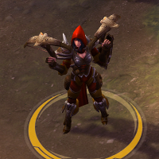
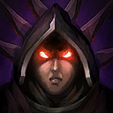
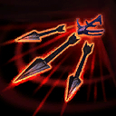
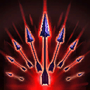
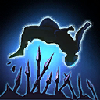
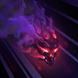
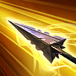
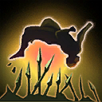
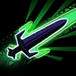

Valla
Welcome to our Valla guide for Heroes of the Storm. Here you will learn everything you need to know in order to play Valla in a competitive environment, whether you play on your own or with a team.
Multishot Build
| Level 1 | Level 4 | Level 7 | Level 10 | Level 13 | Level 16 | Level 20 |
|---|---|---|---|---|---|---|
|  |  |  |
The Multishot Icon Multishot build focuses on improving the aforementioned Ability. It provides a remarkable amount of area of effect damage at the expense of some single-target damage potential. Furthermore, one of the key Talents for the build, Punishment Icon Punishment, must be built up through Hatred Icon Hatred to see any real payoff, making it twice as important to maintain Hatred Stacks. Other key Talents include Arsenal Icon Arsenal, which modestly increases Multishot's damage all while reducing its Cooldown, and Frost Shot Icon Frost Shot, which greatly improves the Ability's range on top of providing you with a strong movement speed reduction effect. This build works under most circumstances, though is generally more useful when your team lacks proper waveclear.
Rancor Build
| Level 1 | Level 4 | Level 7 | Level 10 | Level 13 | Level 16 | Level 20 |
|---|---|---|---|---|---|---|
|  |  |  |
The Rancor Icon Rancor build seeks to maximise the potential of Valla's Basic Attacks. Out of all potential Valla builds, this one has the highest sustained damage dealing potential against Heroes. This strength comes at the expense of some survivability, as Valla must attack for an extended period of time to build Hatred Icon Hatred stacks to ramp her damage up. As such, this build is generally unsuitable against Cloaked Heroes, who usually try to burst Valla down, though it generally does enough damage to seriously threaten even the thoughest of tanks.
Hungering Arrow Build
| Level 1 | Level 4 | Level 7 | Level 10 | Level 13 | Level 16 | Level 20 |
|---|---|---|---|---|---|---|
|  |  |  |
The Hungering Arrow Icon Hungering Arrow build focuses on improving the aforementioned Ability. This build provides a remarkable amount of single-target burst damage and self-sustain, and does exceptionally well against Mercenary Camps and Bosses, thanks to the Monster Hunter Icon Monster Hunter Talent. This build is particularly popular on the Battlefield of Eternity Map, where Hungering Arrow can be used to make very short work of the Immortal that must be destroyed. The build also sees use against some of Valla's counters, most notably against cloaked Assassins, as it provides the most burst survivability through the Siphoning Arrow Icon Siphoning Arrow and Repeating Arrow Icon Repeating Arrow Talent combo.
Go Back